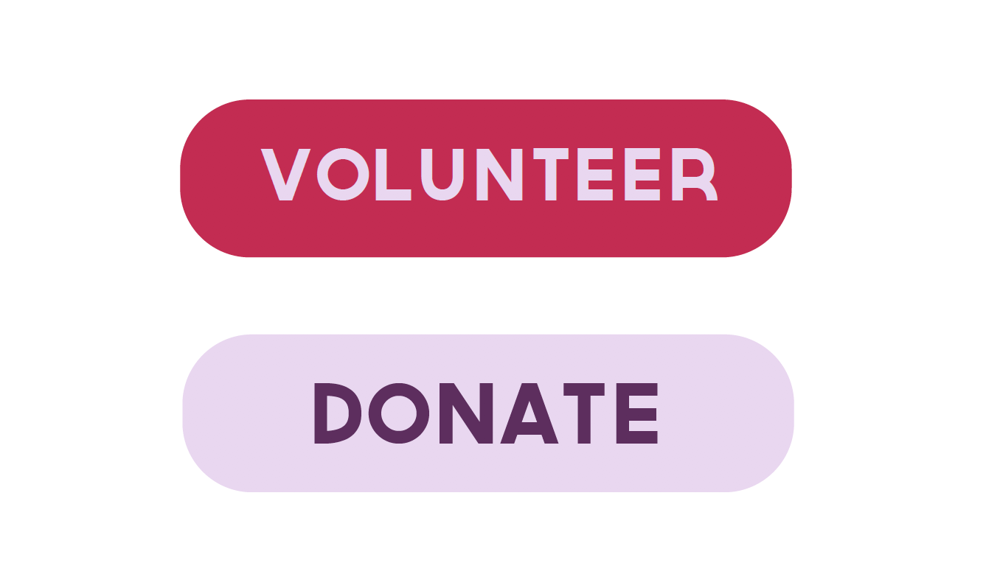

Solution
Call to Action
The first CTA says “Volunteer” and leads to a page with information about how to get involved with The Bulb. The button is aimed towards people looking for a way to help the community. The second CTA says “Donate” and leads to a section of the website with an easy-to-use program to pick donation amounts. The donation button will be front and center with the volunteer button, encouraging philanthropists and locals to help donate to the cause.
Style Tile
The final solution was created using a style tile! I collected all the elements I had decided on, from a color scheme, to vegetable patterns, to photos, to the chosen typfaces, and arranged them in a way to give the client an idea of what their website will look like.